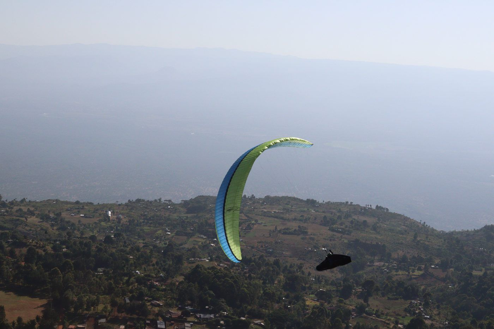

World Record Attempt · Kerio Valley, Kenya
The Speed Record Attempt
Two world records for speed: 100 km and 200 km, out and return.
- Window
- 18 Jan to 12 Feb 2027
100 km200 kmKerio Valley100 km200 kmKerio Valley
02
The Mark To Beat
100 km mark, class O-3
35.94km/h
My best average, about
36km/h
200 km mark: [to supply]
Start, finish
Turnpoint50 km out
0100 km
- Flown
- 100 km
- My best, 36 km/h
- 2 h 47 min
- The mark, 35.94 km/h
- 2 h 47 min
04
Kerio Valley
Base of my Kenya expeditions, where world speed records are chased.
- Where
- 0.72°N 35.65°E
- Season
- December to March
- Thermals
- 4 to 6 m/s; rare surges 6 to 7
- Flights
- 2 to 7 hours over the Rift Valley
- Before
Preparation
Wing, instruments, team, FAI observer [to supply]
- Before
Build-Up Episodes
Plus the newsletter

- 18 to 29 Jan
Live tracking, daily updates
- 1 to 12 Feb
- After
The Claim
FAI Sporting Code, Section 7D
- After
The Film
Debrief episode, flight data
06
Who Flies It With You
Podcast, YouTube and a newsletter about four times a month.
Aninder Singh
- Podcast streams
- 100,000+
- Countries reached
- 130+
- Long-form interviews
- 80
- Years flying
- 10+
One only
Title Partner
- Your name in the attempt's title
- Your mark on kit and camera
- Sponsored build-up and debrief segments
- First film credit
- Logo on the live tracking page
Equipment Partner
- Your product used and shown
- An honest, disclosed review
- With my Kenya expedition pilots
- Credits
Supporter
- Your name on this page
- Newsletter and debrief thanks
- Film credit
Sources: UP Paragliders, FAI records, Sporting Code 7D